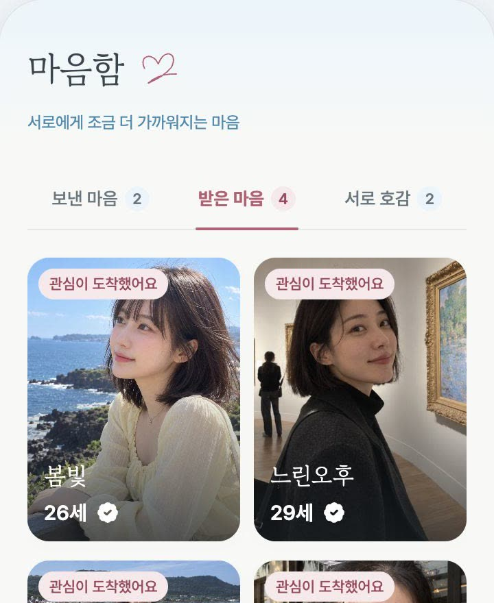
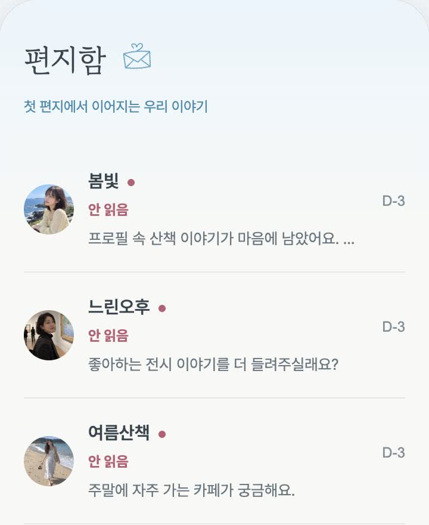
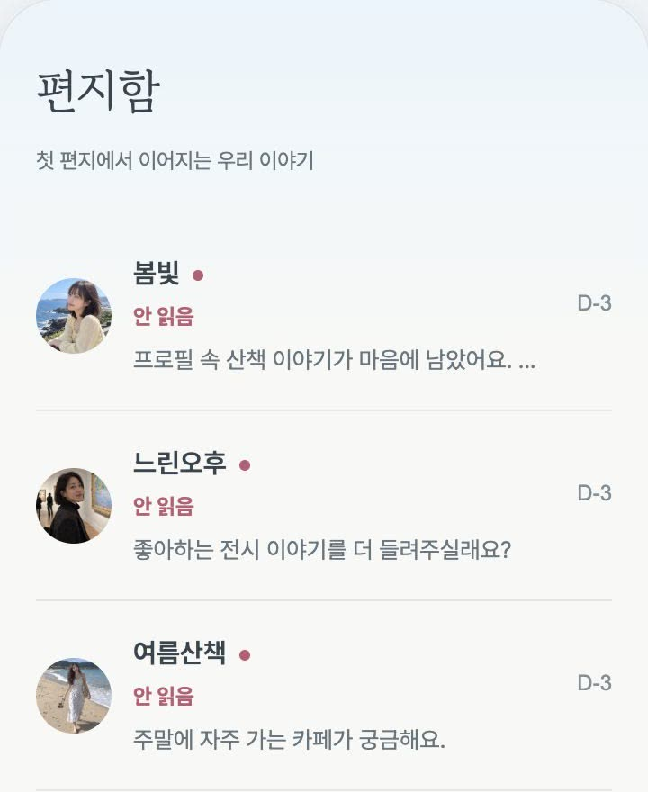
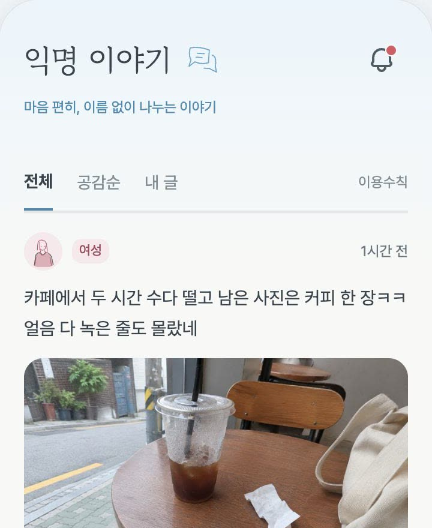
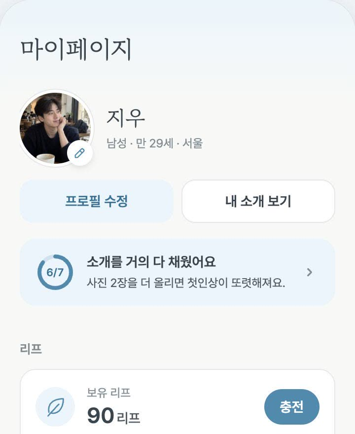

인연 홈을 뺀 하단 메뉴 화면의 위쪽만 바꿨어요. 제목 옆 손그림 아이콘을 빼고, 파란 부제목을 쿨 뉴트럴 600 회색으로 바꿨어요. 글씨 크기와 간격, 아래 내용은 그대로예요.




시안은 600으로 맞췄어요. 더 옅게 하려면 500, 더 또렷하게 하려면 700이에요.
.category-sketch)을 숨겨요. 그림 파일은 지우지 않고 안 보이게만 해서 나중에 되살리기 쉬워요..category-subtitle 색이 파랑(--color-fg-accent)에서 --cool-neutral-600으로 바뀌어요. 크기 12px와 위아래 간격은 그대로예요.